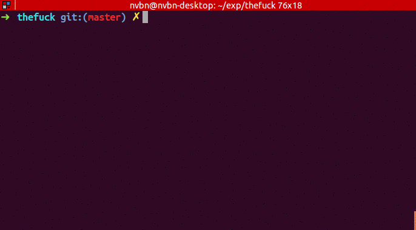

The fucking script !!!!
Ne vous inquiétez pas je n'ai pas la haine après un script, bien le contraire. Si vous êtes comme moi à toujours à oublier ce petit fripon de sudo devant apt-get alors thefuck peut résoudre facilement votre problème. Ainsi que d'autres problèmes de commandes :)
Thefuck est un script python. Il fonctionne avec bash, zsh ou tout autre shell.
Installation
Le reflex à avoir lorsque l'on veut installer un programme en python est de voir si il est disponible dans pip et installer le programme avec
Sur Debian ou dérivés:
sudo apt-get install python-pip
Sur Redhat et dérives:
sudo yum install python-pip
Sur Arch Il y'a déjà un paquet pour Arch
# Avec pacman
sudo pacman -S thefuck
# Avec PIP
sudo pacman -Suy python-pip
pip install thefuck
Shell
Dans votre shell, il faut ajouter les lignes suivantes, par exemple dans votre .bashrc:
eval "$(thefuck --alias)"
# Et si fuck vous plait pas vous pouvez préciser un alias
eval "$(thefuck --alias tux)"
Recharger le .bashrc
source ~/.bashrc
Thefuck corrige pas mal de commande comme cp, git, grep, ls, mercurial, mkdir, pip, sudo, apt-get, yum, rm etc
Il est même possible de créer ces propres règles simplement
match(command: Command, settings: Settings) -> bool
get_new_command(command: Command, settings: Settings) -> str | list[str]
Plus d'infos ici
Conclusion
Thefuck: tout simplement magique. A utiliser et abuser!